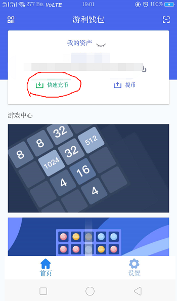
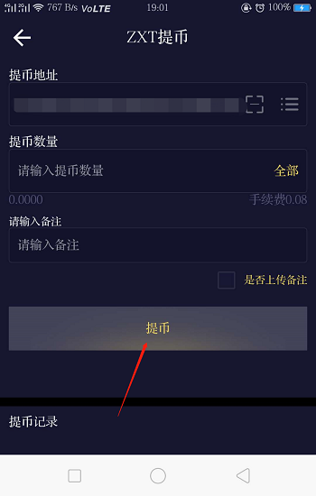
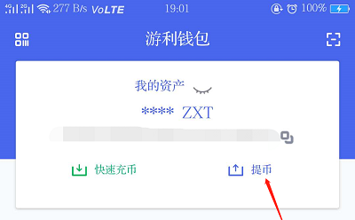
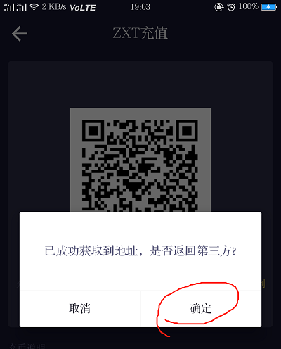
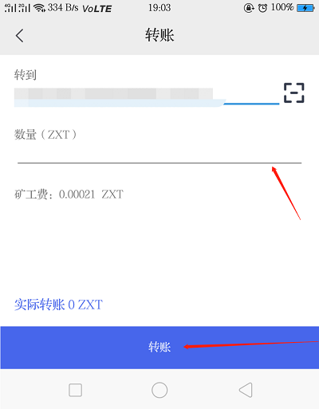
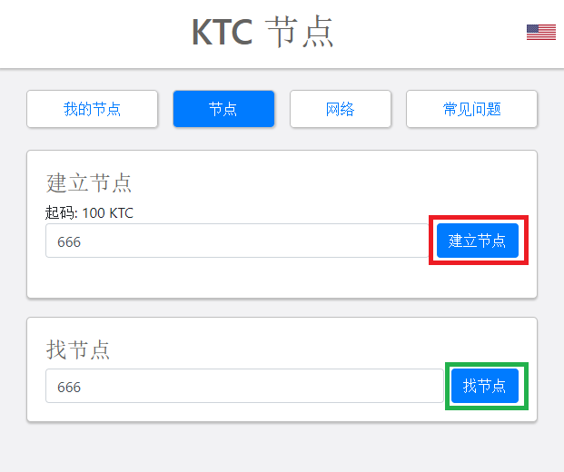
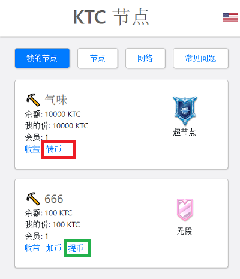
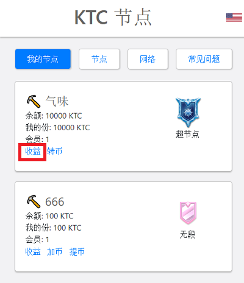
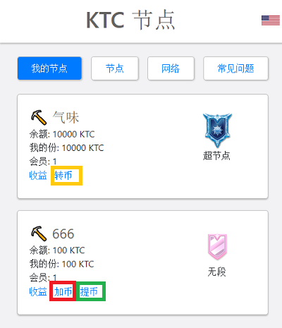

KTC 节点
余额:
0
KTC
节点内:
0
KTC
我的节点
节点
全网节点
常见问题
您未加入节点未
加入节点
创建节点
最低限额： 100 KTC
创建节点
加入节点
搜素节点
发行总量:
0
KTC
节点
0
0
0
0
0
常见问题
新手入门
1. 什么是节点？
大家可以理解为—拥有特殊权利的Kitcoin家庭成员。节点的权利就是公开、透明地分配链上的资产。
2. 为什么需要使用游利钱包加入到节点？
将KTC充币到游利钱包让KTC转到区块链地址。
已上区块链的KTC都可以转入到节点。
3. 收益是每年固定的吗？还是递增？
每个节点的收益率是每年固定，采用智能合约自动分发。节点的收益随时都可以领取，收益全部都是KTC活币。
4. 会收服务费吗？
平台本身不收服务费，但是在充币或提币的时候会有ZXT 为燃料费，费用很低，一个ZXT可以用很多次哦！
5. 主节点跟普通节点的区别是什么？
首先，主节点数量恒定，而普通节点数量不设上限；其次，主节点一旦满10000KTC不可以撤销，币也无法撤回，而普通节点随时可以撤回KTC；最重要的是，主节点的奖励的KTC活币比普通节点高很多。
6.可以将币转给某个领导，他帮忙申请节点吗？
节点中每个人是按自己加入的份额获得相应比例的奖励。所有的节点都可以自己加入拼节点或者创建，不需要通过别人的账户。 如果您将币转给别人，您的资产安全和节点收益将无法保障。
7. 提现到错误地址怎么办？
一旦您点击提现，系统将自动进入提币流程，无法中止。由于区块链地址的匿名性，我们无法找到对方，也就无法帮您找回失去的币。 所以一定要再三确认地址的正确性。
8. 充值到交易所以外的错误地址怎么办?
如果您的币充值到错误的地址，平台将无法收到对应的区块链资产，由于区块链的匿名性，因此无法帮助您找回，建议通过其他方式找到对应地址的所有者协商找回。
1.钱包如何充值？
首先，需要交易所APP更新到最新版本；
然后，进入首页—点击快速充币—页面自动跳转到交易所提币页面—输入提币数量和备注即可。  
2.钱包如何提现？
首先，还是需要交易所APP更新到最新版本；
然后，进入首页—点击提币--页面自动跳转到交易所充币页面—点击确定--输入提币数量，点击转账即可。   
3. 如何成为节点？
如果是自己创建节点，需要钱包余额不少于100KTC，然后进入“节点”—“创建节点”即可，如图中红框所示；
如果是加入别人的节点，只需要进入节点页面之后，“搜索节点”，如图中绿框所示，然后申请加入，按提示转入KTC即可。 
4. 如何退出节点？
这里分两种情况：
1） 主节点：如果您是加入的101个主节点，已转入资产才不能转出，但是自己的份额全部可以转让给别人（点击红色框内的按钮），就可以退出了
2） 其他节点：撤回您的币即可退出（点击绿色框内的按钮） 
5. 如何提取节点奖励？
在“我的节点”中，点击节点下方的“提取分红”（红色框内的按钮），奖励KTC活币就会直接发放到您的钱包账户。 
6. 可以改变自己的份额吗？
1）增加份额：在节点余币还没有到上限时，可以一直往里面增币（点击红色框内按钮）；
2）减少份额：可以随时点击“撤回资金”（绿色框内按钮）减少您的所占份额，可以部分或全部撤回。
注意：主节点在没满10000KTC之前，可以随时撤回，满了10000KTC之后不能撤币，但是可以把您的份额转让给别人（点击黄色框内转让）。 
更多详情点击
KitCoin.info